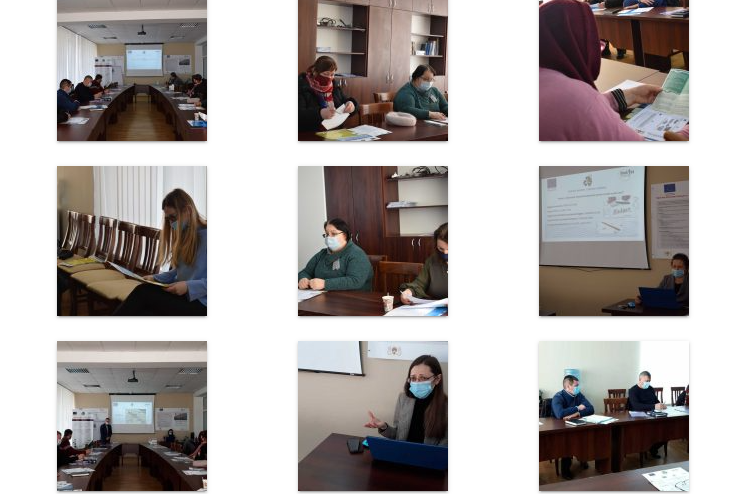
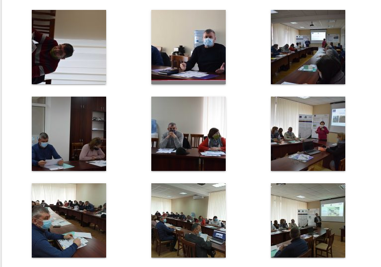

În perioada 11-12 februarie 2021, în incinta Centrului de Informare pentru Cetățeni al Primăriei municipiului Ungheni, au avut loc 2 seminare de instruire a reprezentanților administrației publice și operatorilor de servicii publice, membrilor grupurilor de interese inclusiv ONG-uri și angajaților centrelor educaționale comunitare, întreprinderilor mici și mijlocii (SRL /GȚ/ ÎI) și ai publicului larg/ persoane fizice interesate în efectuarea compostului la domiciliu/ din municipiul Ungheni și 5 localități rurale beneficiare (satul Costuleni, comunele Manoilești,Valea Mare, Zagarancea, Pîrlița). Instruirile cu tema „Compostarea individuală” s-au desfășurat în cadrul Proiectului BSB 1138 „Parteneriat împotriva deșeurilor pentru zonele rurale verzi”/ „Anti-Littering Partnership for Green Rural Areas” / APRA”, finanțat de Comisia Europeană prin Programul Operațional Comun Bazinul Mării Negre/ POC BMN/2014-2020, implementat de Municipalitatea Tskaltubo (Georgia) – Partenerul Lider, REC Caucasus Armenia (Armenia), Primăria Municipiului Ungheni (Moldova), Asociația Tehnopol Galați (România), Uniunea Oamenilor de Știință Imereti “Spectri” (Georgia). Participanții la instruiri s-au informat despre activitățile realizate și posibilitățile de implicare în activitățile care vor avea loc în etapa următoare de implementare a proiectului. În cuvântul său de salut, viceprimarul Municipiului Ungheni Dionisie TERNOVSCHI a vorbit atât despre rolul autorităților publice locale, membrilor societății civile și mediului privat în colectarea selectivă și compostarea deșeurilor, cât și despre necesitatea implicării active a populației orașului și localităților rurale în acest proces pentru a reduce poluarea mediului înconjurător și a îmbunătăți calitatea vieții. Subiectele prezentate conform agendei instruirilor au captat atenția celor 50 de participanți prin calitatea și accesibilitatea informațiilor despre conceptul, etapele și principiile compostării deșeurilor biodegradabile, metodele și soluțiile de compostare individuală. Ei au urmărit cu foarte mult interes prezentarile experților privind politicile Uniunii Europene privind compostarea și bunele practici de compostare a deșeurilor biodegradabile din municipiul Galați, România, au adresat un șir de întrebări și au lansat idei de îmbunătățire și modernizare a servicilor locale de salubrizare. Tematica abordată la aceste instruiri s-a dovedit a fi foarte importantă pentru toți participanții din perspectiva acumulării de cunoștințe privind compostarea ca cea mai simplă posibilitate de reducere a deșeurilor biodegradabile în depozitele de deșeuri și gospodăriile individuale, precum și din cea de formare a atitudinilor pozitive și dezvoltare a abilităților practice de planificare a acestui proces. Este de remarcat angajamentul tuturor participanților de a disemina în familii, la locul de muncă și în comunitățile lor informațiile și cunoștințele obținute privind compostarea deșeurilor biodegradabile pentru a proteja mediului înconjurător și respectiv sănătatea oamenilor. Evenimentul s-a desfășurat cu respectarea tuturor normelor impuse de situația pandemică actuală.
 